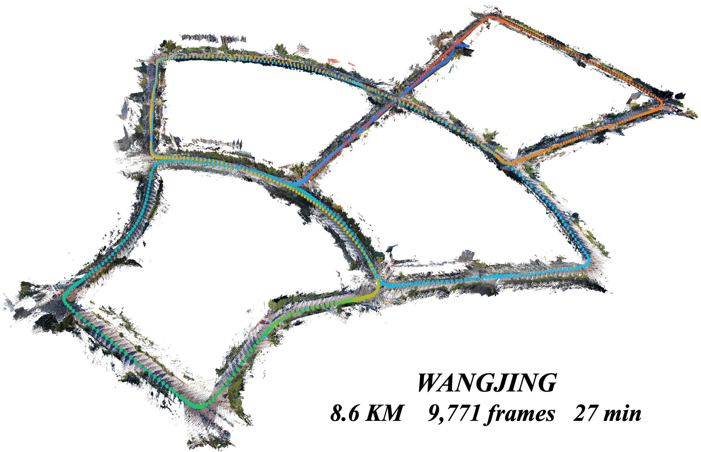

Streaming Spatial Intelligence
ABot-Recon
Revisiting Local Context for Long-Horizon Streaming 3D Reconstruction
Stable streaming 3D reconstruction for ultra-long sequences using a fixed 12-frame local context.
Video
See ABot-Recon in action.
Watch the full project video with playback, seeking, and speed controls.
0:00
0:00
Ready to play
Drag the timeline to seek
Demonstrations
Long streams, reconstructed as they unfold.
Six representative settings, from vehicle-scale routes to low-viewpoint embodied navigation.
Overview
Long-horizon reconstruction from strictly local context.
ABot-Recon incrementally estimates camera motion and reconstructs local geometry from a continuous image stream.
Results
Accurate over long spatial and temporal horizons.
Citation
Build on ABot-Recon.